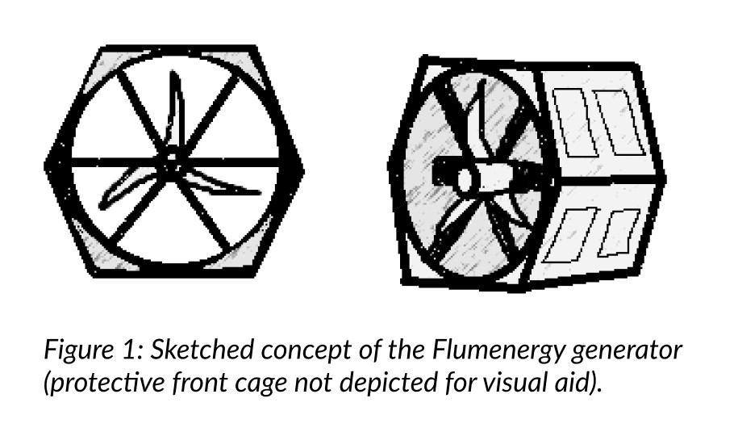
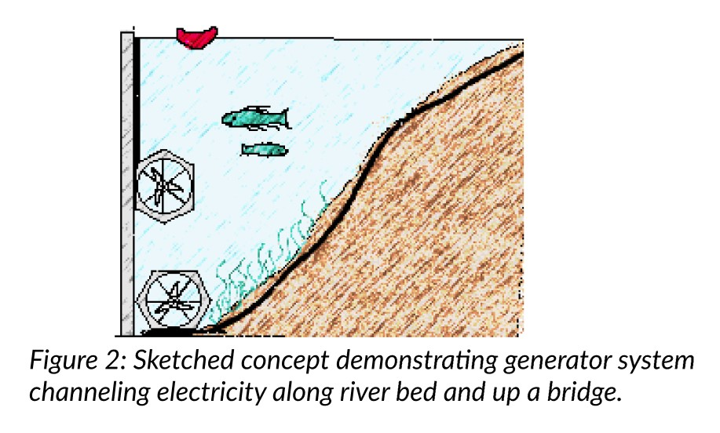
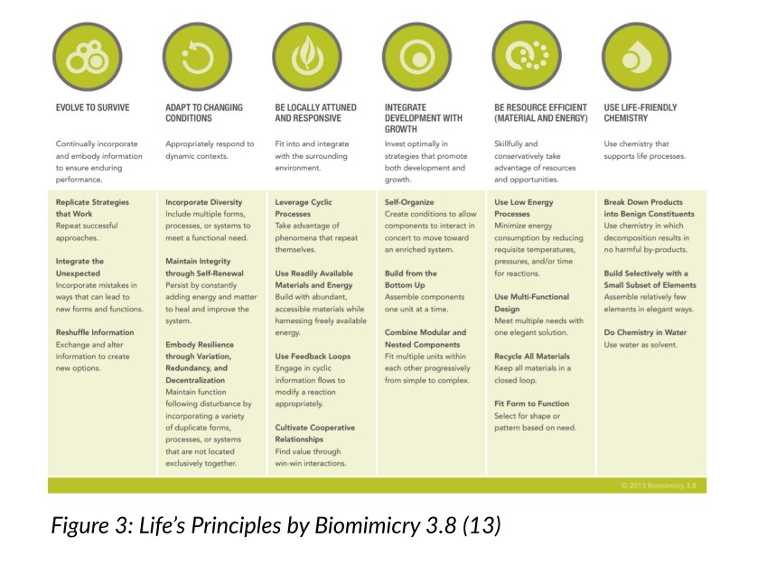
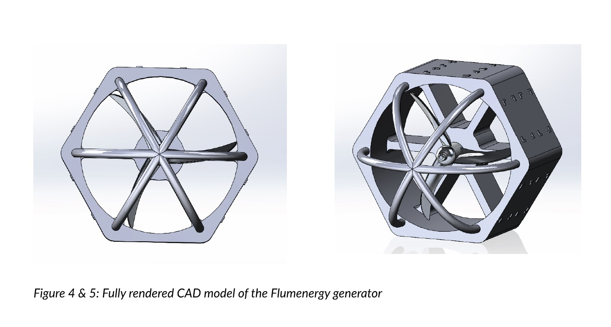

Flumenergy

April 3, 2021 || 4-week duration || 3rd Place Winner
Team: Charles (CAD, Technical Design, Business), Michelle Lin (Physical Design, Energy),
Anastasiia Sviridenko (Business, Finances)
Executive Summary
The Flumenergy Project tackles the lack of clean energy sources around the globe, focusing specifically on the UN Sustainability Goal of “Affordable and Clean Energy,” as well as “Sustainable Cities and Communities” and “Life Below Water.” The project aims to provide clean electric power to riverside communities that can be distributed and utilized 24 hours a day all-year-round. To accomplish this, we have designed an electric power generator that can be installed at the bottom of rivers to utilize the force of their natural current.
While the technology is similar to wind turbines, ours is designed to be much smaller, so that many can be put in a variety of river types, and their energy can be sent shorter distances to distribution points near the river. Because rivers are reliable in their continuous flow, the forces pushing against the generator(s) create a system of near-constant power harvesting, beating out the inconsistencies of other natural power sources like solar and wind.
The hydroelectric generator is in a hexagonal frame (Figure 1), which will create strength and stability up against strong currents and varying water pressures. This shape is inspired by turtle shells and various species of coral, both of which are some of the strongest natural structures inhabiting Earth’s waters. In addition to the frame, there is a cage of 6 rounded bars (not pictured in the Figure 1 drawing) that will protect the front of the generator from debris and protect large wildlife from the spinning turbine. Inside the frame of the generator will be a turbine, composed of blades/fins on an axle, similar to the design of traditional wind turbines. We have modeled the blades of the turbine off of the structure of turtles’ front fins, as they are sturdy in propulsion while also being sleek enough to glide through water. The three blades will be pushed by the current of the water passing through the turbine that forces the whole mechanism to rotate, which will be translated in another compartment from mechanical energy to electrical energy.
In addition, each turbine will have the capability to be equipped with several devices to take readings of the water around it. These monitoring devices would measure things like PH ratings, and certain chemical compound levels (e.g. CO₂, H₂O). Since the devices will be mounted on the outside of each turbine, we plan on our design having the accessibility to switch out devices and add more of them (up to 10 in total) to the incorporated mounts. By attaching monitoring modules to the outside of the turbine structure, each generator will be able to communicate its various readings to a database that would be publically available. This will quantify the river’s health continuously (indicating amounts of pollution and chemical imbalances) all while generating energy that gets distributed to the local community. Each generator will be creating a sustainable electrical output that will supplement the community’s current electrical grid while also promoting the ecological health of the river.

Introduction
The Flumenergy Project was born from a passion for environmental preservation and sustainable development. All across the globe, access to reliable energy is a struggle for too many communities (1). When you say “clean” energy, it becomes an even more widespread need, for towns and cities large and small. Energy is how we remain stable and further develop our societies, which is why finding new ways to generate it sustainably is one of the UN’s Sustainability Goals (2). Our team took to the goal of “Affordable and Clean Energy,” as well as “Sustainable Cities and Communities” to reflect this demand for local green electricity sources. Boston University being right on the Charles River gave us inspiration: using water current to generate energy just like wind farms. Putting a generator underwater would be a big project, though; installing technology into an untouched ecosystem is not ecologically conscious. We started to wonder about the different types of communities that exist in nature, as we knew that we wanted to come up with a solution that could be integrated into an unfamiliar environment without being overtly invasive. This question of “how does nature create infrastructure without disrupting other systems” brought us to our answer and third sustainability goal: coral reefs and “Life Below Water”.
As we researched more, we found not only that hard coral comes in a variety of structures that all support their habitats (3), but also that they protect the landscape around them from natural disasters (4). This made us wonder if we could do even more biomimicry when it came to the coral we were inspired by. Initially our plan had been to just keep these turbines as far out of the way as possible, but now it was clear that we could do the opposite! Embedding our turbines into the slope of the river bed as well as the bottom would keep them out of the way of human and animal traffic above while also providing more support against debris and erosion. We could even put them along bridge supports so that the energy they produced could be channeled right up to the bridge, complementing the structure that already exists. Just like coral, these turbines would be able to blend into their environment and even help the ecology of the existing system.
Even with the clean energy, though, we wanted to do more. If we were creating a system that incorporated itself into the environment, why not also set up a system for directly helping the health of the river as well? One of the best ways to gauge a river’s health is by doing water testing/sampling. The Charles River Watershed Association (5), as well as other watershed associations across the country, do regular testing of the waters along the river’s course to keep track of a variety of chemical/substance levels that give an overview of the river’s ability to support life. A toxic river can be catastrophic to natural fauna and flora, as well as to the humans that live off the land. Since our turbines are built with flat sides for structural sturdiness, these were perfect for attaching something to them; more specifically, attaching sensors! By designing brackets that could hold small sensors, we’ve enabled a whole new functionality to our design. With up to five sides of the generator exposed to open water of the river, the bracketing/slotted system we’ve designed will allow up to 10 sensors attached to the generator. These sensors would not be designed by us, as they exist on the market already, and will be able to attach to the brackets. The idea is that the community that’s installing the generator(s) can choose whatever sensors they want to install based on the measurements they want to take, which will be transmitted through wires parallel to the generator’s electrical wires or wirelessly, depending on the sensor. These could be things like PH levels, CO₂ amounts, O₂ amounts, and any number of others! With the ability to install sensors, a community adopting one or more of the Flumenergy turbines will be able to be proactive with their river’s health while also benefiting from its flow.
In addition, each turbine will have the capability to be equipped with several devices to take readings of the water around it. These monitoring devices would measure things like PH ratings, and certain chemical compound levels (e.g. CO₂, H₂O). Since the devices will be mounted on the outside of each turbine, we plan on our design having the accessibility to switch out devices and add more of them (up to 10 in total) to the incorporated mounts. By attaching monitoring modules to the outside of the turbine structure, each generator will be able to communicate its various readings to a database that would be publically available. This will quantify the river’s health continuously (indicating amounts of pollution and chemical imbalances) all while generating energy that gets distributed to the local community. Each generator will be creating a sustainable electrical output that will supplement the community’s current electrical grid while also promoting the ecological health of the river.
Background
One of the biggest intimidations we had going into this project was the history of underwater power generation. More specifically, the failures in that sector. Free Flow Power Corp was an organization that attempted to do underwater power generation years ago in the Mississippi River (6). According to a government page outlining the project, there were several “stigmas” that plagued the project as it was being done and hindered their image before they even got to get up and running. Worries such as sediment displacement, recreation safety, fish entrapment, interference with fish habitat, cultural disruption, vegetation disruption were all made as claims against the project, despite the fact that “early entrainment tests show no harm [to fish] – intended to investigate the appropriateness of the Conte Lab for entrainment testing resulted in no harm to 10 lake sturgeon injected into the turbine and observed for 48 hours though at least one fish died eventually.” This showed proof of concept to that team and to us that an underwater turbine was not an immediate danger to the river’s ecosystem, especially since ours has a cage built onto the front. If integrated properly into the landscape, our design would be conscious of the environment enough-so to become a stable part of the habitat.
The main reason that Free Flow Power Corp (and potentially many others) failed as a company was because there wasn’t a willing consumer audience for their product. Due to the fall in natural gas prices and resulting economic pressure, there was no city that was willing to switch over to hydropower, even though it would save money in the long run. They never completed their research and eventually surrendered their permits, ending the project’s life. This didn’t actually scare us though. We are not pitching this device as a replacement for other energy sources, but more as a supplemental. Just as coral does not replace the environment around it and actually creates additional support instead, so too would the Flumenergy turbine.
Besides this, just a quick look around the world wide web shows that there are very few low-cost underwater generators that can be placed at the bottom of large rivers. We weren’t able to find any that didn’t majorly interfere with the environment or boat traffic. Many were just obtrusive, and others were not meant to be placed on riverbeds at all. Although this lack of other devices was at first intimidating, it was also encouraging. We were designing something that no one else cared to put into motion. By studying the different turbine options and reading through their reasonings, we were able to learn about the various setbacks and obstacles of other projects and figure out how we would combat them in our own ways.
The next major obstacle that we ran into was our force simulation modeling. It was great to be able to model our design in a 3D environment via computer-aided-design, but we also really wanted to use this to see how our design held up against the underwater pressures of the different river depths (specifically in the Charles River). Although we spent hours at a time attempting to simulate the forces on our model, the program being run kept putting up unfamiliar errors and exiting the simulation before we could properly do an analysis. While we’re still confident that our design would hold up to the depths of the Charles River and other similar ones, it looks like the best way to verify this would be to build a scale model. Although impossible for now, this could be a potential future opportunity.
Technical Overview
The foundation of our turbine design is the prospect of using water flow as a way of generating power. Natural river current has a force behind it that pushes boats and creatures and serves as an untapped source of energy in so many rivers across the world. We want to change that. Just like wind turbines, underwater turbines can turn the force of the water into rotational energy that then gets translated into electrical energy. That rotational energy is where we started.
Water flow is quite different from wind though. Unlike wind, water has a density that interferes with itself and forces itself to take a very specific path. Just like how the wind can travel right over a rock while a river has to find its way around it, the same physics applies to turbines. Regular wind turbines have blades that are usually pointed straight forward, which causes a lift by the way that they’re shaped and not by how they’re angled. If that shape was put underwater, though, the water would flow right around it and not push it as much. To actually maximize the work that the water does on our turbine, we couldn’t model our design after something humans built above water. Instead, we looked underwater, at sea turtles again! Unlike other sea creatures, turtles don’t have flexible bodies to propel themselves through the water (7). Instead, they use their front flippers as their only propulsion, which is spectacular that they pull all of their weight through the water like that. The flippers were the perfect thing to model our turbine’s blades after, so that’s exactly what we did in our CAD model.
The encasing of the turbine is hexagonal, modeled after a variety of different species of hard coral (they all have some circular variation of a hexagon shape) as well as the sea turtle’s shell. Some of nature’s sturdiest designs are hexagonal, so we trusted that this was the right shape. But the circular part did not escape us. Our initial design was completely hexagonal with sharp corners on the inside and the outside. As we got feedback from others and discussed it further, we realized that rounded corners on the outside would allow it to fit into the river bed better and get the water to flow more easily around it without subjecting the frame itself to too much straight-on force. On the inside, we also realized that the way to capture the most water flowing through the turbine was to only have space for the blades to travel through. As a result, we ended up making the inside of the turbine’s space completely circular, so any water traveling through that space had to push the blades, making the generator more efficient. In later iterations of our design we also took note of the possibility of debris getting into the generator. To mitigate this, we designed a circular cage of 6 round bars in front of the turbine. This way, any large animals or debris would not get caught in the blades and instead bounce off, while smaller things could flow in and flow right through.
Although the turbine could be placed at the bottom of a river, our hexagonal design allows it to be set up at any position along a river’s sloped bed. The angle of one “side” to another would be able to fit neatly into the edge of a river’s slope. This of course would change from river to river, but the modular design in this manner allows it to be more accessible to different types of rivers, and therefore different ecosystems and human communities. One of the six sides does not have brackets for sensors, so that it is clear that it will be the side that “attaches” to whatever main surface the turbine will be on. This carried over when we decided to expand our modularity to location as well, specifically to bridges. Bridges are one of the most common structures you’ll see thrust into any river’s environment. Since we wanted to embed our device into the environment, we decided that having the ability to place it onto the side of a bridge as well would be the perfect way to use that integrated methodology. Now, energy generated will either flow through wires tracing along the river bed or traverse up through a bridge’s supports to wherever it needs to go.
A turbine’s electrical power output can be calculated by using the formula (P = 0.5 * η * ρ * A * v * v²) where η is the efficiency (typically 90% for small turbines), ρ is the density of water (998 kg/m³), A is the area of the turbine’s cross section (0.179 m²), and v is the velocity of the river (the average river travels at about 3.1 m/s) (12). This put our power output at approximately 7.94 kW.
Business Overview
Small hydropower technology is one of the fastest growing ways to generate electricity to maintain the consistency of the grid supply both in rural and urban communities (8). Given that a majority of energy still comes from fossil fuels, it supports the need to stabilize the power supply from renewable energy when other sources become unreliable like solar and wind at the least invasive way and most competitive cost of electricity since water is the lowest cost renewable when done correctly (10). With the help of the mentioned turbine design, implemented in multiple locations along the river of the nearby community, the renewable energy can be harnessed locally and sustainably.
As we assess economic feasibility we looked at investment costs comprising the development and installation. Currently in the market, the cost of installing hydro power plants varies depending on the existing infrastructure and the installation capacity. When considering direct investment costs, we looked into existing hydropower systems and associated expenses which include civil costs, equipment and power transmission costs (8). Given the small size, modularity and ease of deployment of our design we expect to eliminate the need to rely on an extensive construction and hydro structural costs such as landscape adjustments of the water systems and future unpredicted costs. Across the market for hydropower generation, electro-mechanical costs which relate to the cost of turbine, generator and accompanying engineering equipment, the usual costs accounts for about 30-40% of the total hydropower plant budget (8). Assessing our design requirements, current aluminum cost is approximately $1 per pound. Based on our design, the mass of the generator frame according to the CAD model is approximately 100 lb, which yields the expected production costs of the frame to be about $100 to manufacture. Accounting for additional costs of manufacturing, rough estimates for our hydropower project given the 30% placeholder above, can be set at an initial cost of $330 per turbine. Lastly, the cost of construction of power transmission to deliver the energy from the turbine to the power grid must be considered, and which highly depends on the location and the type of transmission system applied.
Hydro-power systems usually require high initial capital investment but low maintenance costs, which hugely depend on the size. Unlike existing hydropower plants that require high operation and maintenance costs, we expect our turbine design to support little maintenance due to material longevity, effective waste capture and primitive sensor suit. We discovered the regular operation and maintenance costs without major changes over time are estimated to be between 3–4% of the capital cost, however given the recent hydropower cost data, we decided to account for the fact of smaller hydropower plants to have much higher operation & maintenance costs and increased this placeholder to 16% of total capital cost i.e around additional $53 per installation. (9)
Each of our turbines generates approximately 7.95 kW, which is the equivalent of 7.95 kWh when addressing costs. If we were to put a single turbine in a river in Boston where the average electricity cost is $0.225 (11), one turbine would save approximately $1.79 in energy in the city. Assuming that the turbine runs consistently all year, it would save $1,306 in a month, and $15,680 in a year. These are idealized numbers for consistently strong currents in a constant river speed, but they speak volumes for the economic and ecological impact of clean energy. In other terms of ecology, our turbine design is made to support the environment just like coral. This sets us apart from other underwater turbine designs that did not prioritize the environment they install themselves in and cause disruption to the habitats they invade.
Potential Impact
One of the main driving factors for this project was our collective love for the environment. We share a passion for wanting to advance technology in a sustainable way that helps not only humans but the planet as well. Starting off with our materials, we prioritized the use of materials that could be recycled. Although the use of recycled materials could bring our costs down, we are including it in this section of the report as it has more value to our team as a sustainability factor, rather than a monetary one. It is also the cornerstone of this project that the energy being generated is completely green, without any waste involved and simply uses the environment to create the power we’re harnessing. This, as mentioned in the business overview, will act as a supplement to a community’s current electricity sourcing, and will decrease the use of fossil-fuel-based energies.
The design of our turbine in its small nature is also meant to be scalable. A river can have many turbines in it, and the idea is that a low-cost turbine will allow a community to invest in one easily, which takes immediate effect and helps the environment as soon as it’s installed. As time goes on, the community can use the money that it has saved in energy costs to install other turbines, and help the planet even further while still powering their homes. This could help bring an entire community to being carbon-neutral.
As part of our biomimicry aspect, we still prioritize the health of the waters just as coral reefs do. The system for attaching sensors to our generator would allow all communities to install a variety of different sensors to help defend against pollution and take a big step overall in bettering the ecology of the environment that they live next to. This can range from small regular checkups to full scale organized programs and a regularly updated website for the entire public to engage in.
To follow our guide of Life’s Principles, we’ve gone after the actions of Replicating Strategies that Work, Incorporating Diversity into our design, Using Readily Available Materials and Energy, Combining Modular and Nested Components, and many more. We’ve strived to make this project an environmentally focused initiative that brings together Life’s Principles, the UN Sustainability Goals, and of course technological development.
Summary
Flumenergy started off as a project without a name. This was all just a bunch of weird drawings at first, until it evolved slowly but surely into something tangible. We prioritized ecological conservation in the realm of technological development. Creating a solution for a worldwide problem of clean energy drove us to look at the river that was right beside us on our own campus. With a hexagon design inspired by nature and a system of modular structure that mimics a completely different part of nature, our underwater turbine is something we are all proud of. Compared to other products on the market, our design is simpler and more lightweight, which yields a lower cost of our turbine design and allows for multiple placements along a river that intends to create a distributed and reliable energy generation system to support the existing grid. This happens all while at the same time not invading the river ecosystem but supporting and monitoring its health in the meantime. Its distributed modular design allows for failure prevention (if one unit fails, it’s less costly and others can still support the grid in the meantime), and communities can feel secure in their own investment to this system.
Some next steps we’ve considered would be further developing the methods of installment for these generators and the systems for river monitoring with sensors. We did not have time to get into the logistics of the sensors themselves, and that would be its own system that we would like to have fleshed out for an adequate project proposition into the global market. We’d also like to evaluate integration with existing grid systems and its cost since it’s highly dependent on the area and system in place. This could be something that we do on a local scale or global scale, but regardless would be the right thing to do for a full-scale measure.
References
1. “THE ENERGY PROGRESS REPORT.” International Bank for Reconstruction and Development, 2019, https://trackingsdg7.esmap.org/data/files/download-documents/2019-Tracking%20SDG7-Full%20Report.pdf
2. “Ensure access to affordable, reliable, sustainable and modern energy.” UN Sustainability Goals, https://www.un.org/sustainabledevelopment/energy/. Accessed 2021.
3. “How do coral reefs protect lives and property?” National Ocean Service, https://oceanservice.noaa.gov/facts/coral_protect.html
4. “Refugia Improve Disaster Recovery.” ask nature, https://asknature.org/strategy/refugia-for-great-barrier-reef-improve-disaster-recovery/.
5. “Measuring Change.” Charles River Watershed Association, https://www.crwa.org/river-science.html.
6. “Mississippi River Projects.” Teethys, https://tethys.pnnl.gov/project-sites/mississippi-river-projects.
7. “Sea Turtles.” Ocean, https://ocean.si.edu/ocean-life/reptiles/sea-turtles
8. KilamaOkot, David. “Review of small hydropower technology.” ScienceDirect, https://www.sciencedirect.com/science/article/pii/S1364032113003092#bib19.
9. US Dep of Energy. “U.S. Hydropower Market Report.” 2021, https://www.energy.gov/sites/prod/files/2021/01/f82/us-hydropower-market-report-full-2021.pdf.
10. “What is U.S. electricity generation by energy source?” US Energy Information Administration, https://www.eia.gov/tools/faqs/faq.php?id=427&t=3.
11. “Average Energy Prices In Boston-Cambridge-Newton.” U.S. BUREAU OF LABOR STATISTICS, https://www.bls.gov/regions/new-england/news-release/averageenergyprices_boston.htm
12. “The Physics Factbook.” Speed of a River, https://hypertextbook.com/facts/2006/NervanaGaballa.shtml.
13. “Life's Principles.” Biomimicry 3.8, https://biomimicry.net/what-is-biomimicry/.
Special thanks to Tyler Christophersen from Biomimicry 3.8 for supporting this project and helping our team make the most of biomimicry that we couldn’t have achieved without his help.